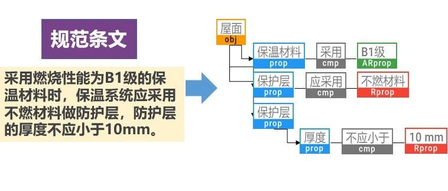

ai-structure.com：土木工程自然语言规则AI解译模块上线测试


https://ai-structure.com/#/auto-explain
2023年4月20日、4月27日和5月5日，ai-structure.com相继发布了新的v0.0.4版本以及图神经网络剪力墙设计、GAN-to-ETABS自动化建模程序(含源代码)等功能。感谢过程中各位工程师的积极参与和反馈。
本次更新，我们将发布一个全新模块：“规则自动解译”（https://ai-structure.com/#/auto-explain），该模块无需注册和登陆账号，可直接使用。本研究由郑哲同学、林佳瑞老师等完成，参阅（新论文：面向自动合规审查的知识增强语义对齐和自动规则解译方法）。
0
太长不看版
土木工程领域有大量的知识是用人类的自然语言表达的，典型例子就是我们的设计规范。如果能够让计算机读懂设计规范并自动将其翻译成计算机代码，那将显著提升我们的结构设计智能化水平。不过由于土木工程专业词汇众多，AI学习的专业语料又比较贫乏，严重限制了土木工程自然语言规则自动解译工作的进展。
针对以上挑战，我们开发了AI规则自动解译模块（访问链接：https://github.com/SkydustZ/auto-rule-transform），并在ai-structure.com网站进行了部署（访问链接：https://ai-structure.com/#/auto-explain）。用户只需要在“输入栏”输入自然语言表达的语句（如“保护层厚度不应小于30mm”），则AI可以通过识别词语含义，对自然语言的文本打上标签，进而把文本内容翻译成对应的语法树结构，可以转换成任意计算机语言的代码。
注意：“输入栏”输入的文字不能有空格，否则系统会解译失败。
1
典型案例
规则解译的典型案例如下：


2
规则自动解译模块原理介绍
规则自动解译方法，融合深度学习与CFG语法，兼具高效与准确，可解释性强；引入领域本体和实体链接技术，跨越模型及规范的语义鸿沟，提升规则生成效率及准确度；支持复杂规则解译，可生成不同语法、格式的规则语言，具有高通用性及高扩展性。

3
规则自动解译模型组成
3.1 预处理

3.2 结构解析
语法树规则与层级标签示意图


基于CFG语法的自动语法树生成

4
后记
智能审查也是智能设计的一个重要环节。自动化的规则解译可以有效避免人工编码带来的成本高、维护性和可扩展性差等问题。欢迎大家试用、并反馈您的宝贵意见。
联系方式
QQ群：741840451（欢迎入群交流讨论）
廖文杰：[email protected]；
ai-structure.com网站中也有联系我们选项
Liao WJ, Lu XZ, Huang YL, Zheng Z, Lin YQ, Automated structural design of shear wall residential buildings using generative adversarial networks, Automation in Construction, 2021, 132, 103931. DOI: 10.1016/j.autcon.2021.103931.
Lu XZ, Liao WJ, Zhang Y, Huang YL, Intelligent structural design of shear wall residence using physics-enhanced generative adversarial networks, Earthquake Engineering & Structural Dynamics, 2022, 51(7): 1657-1676. DOI: 10.1002/eqe.3632.
Zhao PJ, Liao WJ, Xue HJ, Lu XZ, Intelligent design method for beam and slab of shear wall structure based on deep learning, Journal of Building Engineering, 2022, 57: 104838. DOI: 10.1016/j.jobe.2022.104838.
Liao WJ, Huang YL, Zheng Z, Lu XZ, Intelligent generative structural design method for shear-wall building based on “fused-text-image-to-image” generative adversarial networks, Expert Systems with Applications, 2022, 118530, DOI: 10.1016/j.eswa.2022.118530.
Fei YF, Liao WJ, Zhang S, Yin PF, Han B, Zhao PJ, Chen XY, Lu XZ, Integrated schematic design method for shear wall structures: a practical application of generative adversarial networks, Buildings, 2022, 12(9): 1295. DOI: 10.3390/buildings1209129.
Fei YF, Liao WJ, Huang YL, Lu XZ, Knowledge-enhanced generative adversarial networks for schematic design of framed tube structures, Automation in Construction, 2022, 144: 104619. DOI: 10.1016/j.autcon.2022.104619.
Zhao PJ, Liao WJ, Huang YL, Lu XZ, Intelligent design of shear wall layout based on attention-enhanced generative adversarial network, Engineering Structures, 2023, 274, 115170. DOI: 10.1016/j.engstruct.2022.115170.
Zhao PJ, Liao WJ, Huang YL, Lu XZ, Intelligent beam layout design for frame structure based on graph neural networks, Journal of Building Engineering, 2023, 63, Part A: 105499. DOI: 10.1016/j.jobe.2022.105499.
Zhao PJ, Liao WJ, Huang YL, Lu XZ, Intelligent design of shear wall layout based on graph neural networks, Advanced Engineering Informatics, 2023, 55, 101886, DOI: 10.1016/j.aei.2023.101886
Liao WJ, Wang XY, Fei YF, Huang YL, Xie LL, Lu XZ*, Base-isolation design of shear wall structures using physics-rule-co-guided self-supervised generative adversarial networks, Earthquake Engineering & Structural Dynamics, 2023, DOI:10.1002/eqe.3862.

征稿通知
学术报告视频
公众号文章
---End--